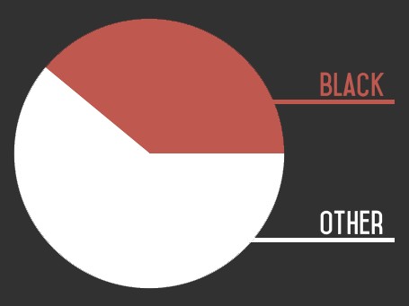

Affirmative action alone, is proof enough of not only systematic advantages given to blacks over other races, but systematic handicaps placed on races with higher achievement. This, combined with the social stigma of white guilt and mass media enticed anger at anyone who so much as seeks to fault any African or minority gives blacks more systematic benefit in American society than any other race.
39% of all cop killers are Black, yet police to hesitate longer when shooting at black suspects
Years of stigmatization and politically charged coverage has caused police to hesitate longer when shooting at black suspects [3]. 39% of all cop killers are Black, although Blacks are only 12% of the population [1]. Blacks are 39 times more likely to commit a violent crime against whites, 136 times more likely to commit a robbery against whites and twice as likely to commit a hate crime against whites than vice versa [4].
Blacks commit 1 in 3 rapes
African Americans are grossly overrepresented in criminal acts. No faux claim of systematic racism can so much as even begin to compensate for sheer disproportion of crime African Americans represent, even when accounted for total population size. Blacks commit 56% of all robberies, 50% of all murders and 1 in 3 rapes [2].
Citations:
- https://www.fbi.gov/about-us/cjis/ucr/leoka/2013/officers-feloniously-killed/felonious_topic_page_2013.pdf#page=4 (archive)
- https://www.fbi.gov/about-us/cjis/ucr/crime-in-the-u.s/2013/crime-in-the-u.s.-2013/tables/table-43 (archive)
- http://link.springer.com/article/10.1007%2Fs11292-014-9204-9 (archive)
- http://www.colorofcrime.com/2005/10/the-color-of-crime-2005/ (archive)